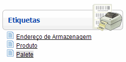
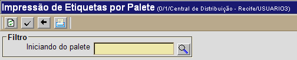
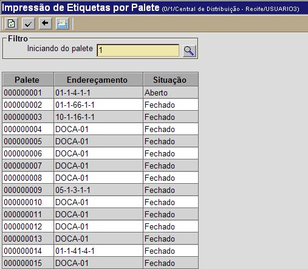
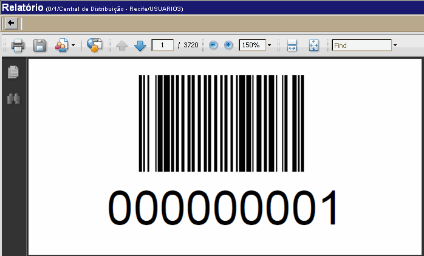

Imprimir Etiquetas por Palete [ Voltar ] Para acessar o formulário, vá ao menu "Etiquetas" na página inicial e clique em "Palete". 
Ao clicar no formulário, a seguinte tela será exibida: 
Siga os passos abaixo: 1º Passo: informe no campo "Iniciando do palete" o código palete para o qual deseja imprimir a etiqueta. O sistema utilizará o palete especificado como referência para trazer todos os paletes com códigos subsequentes. Por exemplo, se você digitar "000000150", o sistema retornará os paletes "000000151", "000000152", "000000153", etc.  3° Passo: clique no botão  para visualizar a tela de impressão das etiquetas. Ao clicar no link, a seguinte tela será exibida: para visualizar a tela de impressão das etiquetas. Ao clicar no link, a seguinte tela será exibida: 4° Passo: para imprimir a(s) etiqueta(s), clique no botão  . Para voltar à tela anterior, clique em . Para voltar à tela anterior, clique em  [Voltar]. [Voltar]. |
 para processar a consulta.
para processar a consulta.